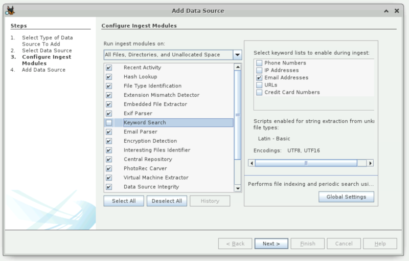

Go up to the ICS HW page (md) | view tabbed version
Professor Bloomfield has been acting strange lately. Ever since sometime around mid-November he has been unfocused in his lectures, and seems to not know the material – even though he’s taught this course many times before. He doesn’t show up to office hours or his required departmental meetings. And he often just misses class. When asked about it, he seems to just brush it off, giving vague answers. There have been many conspiracy theories about what happened, and alien abduction is the latest craze.
He recently left his laptop behind after class. Some enterprising students were able to obtain a disk image of his hard drive before he came and retrieved it.
Take a look at the image and figure out what’s going on.
Note: something you will find along the way is quite obviously satirical – you will know it when you see it. This was done partly for fun, and also so that nobody actually thought that anything illegal was going on.
Find out what happened from the disk image.
Spoiler: there is obviously a story that this disk image can tell, otherwise there wouldn’t be this assignment.
The intent is for you to use Autopsy / SleuthKit for this assignment, as well as some command-line tools and the file explorer. You will want to be familiar with the digital forensics slide set. All the techniques needed for this assignment are in that slide set somewhere.
Any changes to this page will be put here for easy reference. Typo fixes and minor clarifications are not listed here. So far there aren’t any significant changes to report.
As the deliverable for this is a PDF report, you can use any system you want. The system running autopsy, described below, can be accessed via any web browser.
You can get a copy of the hard drive image by going to the URL listed on the Canvas landing page. There is a disk image for each student in the course. You can not use somebody else’s disk image! You will download your image with the wget command posted on the Canvas landing page – change mst3k in that command to your userid.
WARNING: It will take a long time for Autopsy to analyze your disk image – many hours. You need to start that part ahead of time!
There is an invitation code on the Canvas landing page to join the cyber range course, if you haven’t done so already. Once in the course, use the environment for the Forensics HW. You will download the image onto that machine, using the wget command. You then start autopsy via: autopsy.
When you are adding the disk image to the autopsy case, you will be presented with a series of check boxes as to which modules you want to enable. It will look something like this:

IMPORTANT: You MUST de-select the ‘keyword search’ box. All of the other modules take 10 minutes to run, combined. The keyword search takes 5 hours. And the cyber range resets everything after 4 hours.
The Cyber Range has a few limitations that you need to be aware of:
We do not recommend using your own machine. Autopsy is notoriously hard to install, and has caused a lot of frustration to students trying to do so. And it does not work on M1 or M2 Macs.
Autopsy is great, but there are a few limitations that you need to be aware of. These are limitations on either the Cyber Range or your machine.
The intent of this assignment is for you to use Autopsy / SleuthKit. In addition to Autopsy and SleuthKit, you can use the standard tools that come with an operating system – in particular, file explorers, searching contents of files for text, etc. You can use any of the utilities discussed in the digital forensics slide set. You can use differently named equivalents in your computer’s operating system. You may also use your operating system’s default file explorer.
You may NOT use any OTHER existing digital forensic tools for this assignment, beyond the what is mentioned in the previous two paragraphs. You are to use your knowledge of forensics, the forensics slide set, and the existing OS commands. In particular, the “Techniques” section of that slide set has the necessary techniques to find what can be found on this disk image. We recommend learning a few commands: strings, find, and grep may be particularly useful for Linux. You can Google for equivalents in other OSes. Note that some of the information on the disk image was specifically designed to NOT be able to be (easily) found with Autopsy / SleuthKit.
A few notes to help you through the process:
sudo mount -t ext4 -o loop,ro mst3k.img /mnt.
-t ext4 part. You have to create the /mnt directory first, of course.,ro part adds the read-only attribute. If you are having problems with this, you can remove it (so the option is just -o loop), and then you can write to the file system. You can download it again if needed (but delete the other one first – there isn’t a lot of disk space on the Cyber Range system, and you don’t want to have excess disk images hanging around on your own machine)The deliverable is a PDF report, named forensics.pdf.
Make sure you put your name and userid at the top of the PDF! We need to know who you are when we grade it.
The report will be divided into a number of parts. So that we can easily figure out what you found out, please make it clear which part of your report are for which part.
Part 1 is the primary questions of answer:
This part of this report should contain as much of the story as you can determine. Note that you will be able to get partial credit based on what you find, even if you don’t find everything.
The second part of this report should contain the information that you found, and how you found it. The how-you-found-it is is important, as there are a multiple ways to find each piece of information. Please be brief, but concise – we have to read through all of these, and we don’t want to read through pages and pages of content when it can be summarized in a much shorter amount.
The third part is to comment on this assignment:
The PDF report, named forensics.pdf, is the only item to submit.